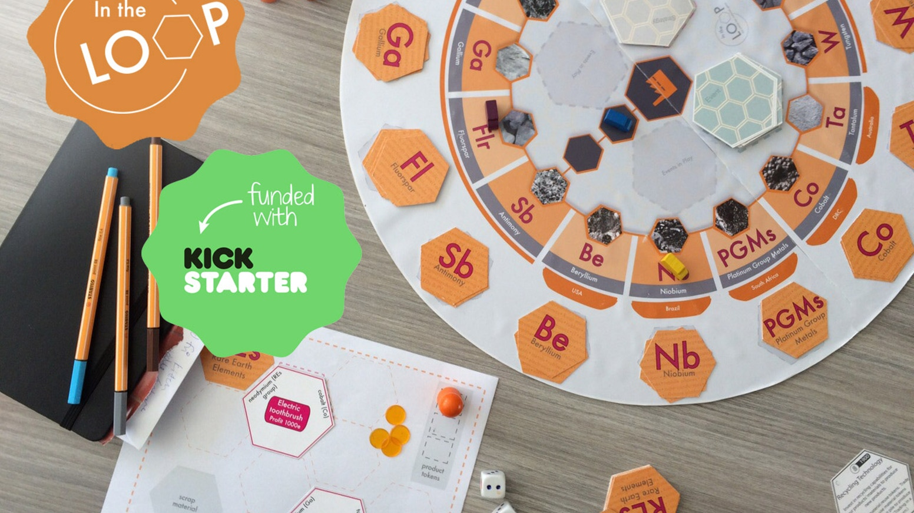
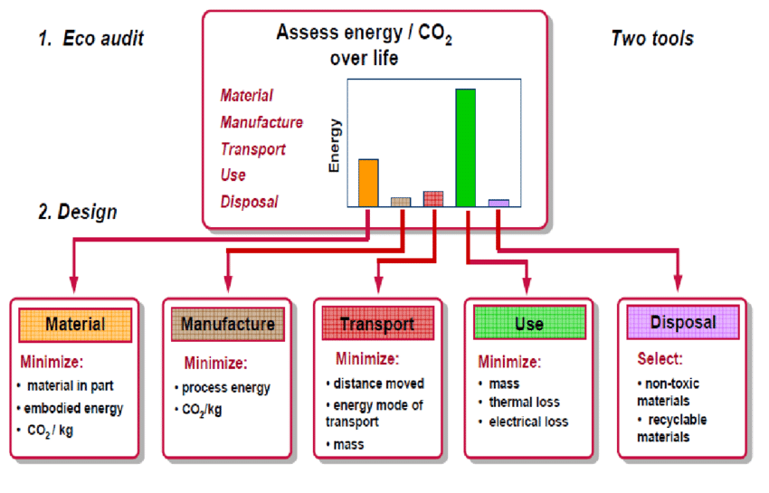

Refelctie "In the loop"

In de loop is een interactief boordspel waar je op een speelvolle wijze kennis opdoet van de globale markt. In het spel worden spellers geïntroduceerd met serieuze economische, politieke, milieumatige en sociale gevolgen van het gebruik van verschillende grondstoffen voor materialen.
Het begin van het spel was erg inkomen, vooral de grondstoffen welke benodigd waren was er opletten en in het begin ontstond er hier en daar nog wat verwarring. Dit liep gelukkig bij de tweede ronde al aanzienlijk beter.
Tijdens het spel gebruiken bepaalde “events “welke invloed hebben op alle aspecten van de markt. Omdat dit bekend was, heb ik gekozen voor een veilige strategie. Voorzichtig zijn met geld uitgeven en vooral niet laten opjutten tijdens een veiling. Tijdens het spelen van het spel maar vooral naar het einde bleek mijn strategie niet de beste te zijn. Wat opviel waren dat bij dit spel snel en veel geld uitgeven de beste strategie is. Hoewel de events zeker invloed hadden op was dit goed vol te houden en hierop in te spelen. In het begin van het spel kies je de kaarten op basis van prijs en stappen, de tweede keer heb ik vooral gekeken wel grondstoffen er nog genoeg waren. Op deze wijze hoopte ik minder last van de concurrentie te hebben en de grondstoffen goedkoper te kunnen kopen. Dit bleek ook zeker het geval.
Het spel in vergelijking met de realiteit is moeilijk te omschrijven. Ik denk dat als er minder geld was uitgereikt in het begin van het spel dat dit meer had geleid tot meer strategische keuzes en meer impact van de “events”. Nu kon er redelijk met geld gegooid worden, in de realiteit is dit vaak niet het geval zeker niet met startende ondernemingen. Door het geruime geld konden de “events” ook goed volgehouden worden tot deze overgingen. Dit is wel een belangrijke les voor een onderneming, indien er genoeg financiële reserves zijn kan een onderneming de klappen van economisch, sociale, politieke en milieumatige gevolgen beter aan en heeft meer kans deze te overleven. Het COVID-19 virus waar de wereld nu mee te maken heeft zal ook zeker als een “event “gezien kunnen worden. Niemand zag dit een halfjaar geleden aankomen en ondernemingen hebben zich hier niet op kunnen voorbereiden. Hoewel de overheid steun aanbiedt, zal een onderneming ook zelf moeten proberen maatregelen te treffen en creatief moeten zijn om deze crisis te overleven. Voldoende financiële reserves zouden deze kansen aanzienlijk verbeteren.
Samenvatting reader 5 paragraaf uit de reader 7769
Materialen en eco-design Een product bestaat uit de materiaalfase, de productiefase, de transportfase, de gebruikersfase of de afvalfase. Als we de impact van ons product op het milieu willen verminderen dan moeten we eerst beoordelen in welke fase de meeste milieubelasting optreedt en hoe dit verminderd kan worden.

In de materiaalfase kun je de milieubelasting verminderen door bijvoorbeeld de massa te verminderen of een universele vorm te gebruiken. Tijdens de productiefase zou je bijvoorbeeld de energie de gebruikt wordt verminderen door andere processen te gebruiken of de warmte die vrijkomt te gebruiken tijden de productie omzetten in energie of gebruiken voor stadverwarming. De milieubelasting van de transportfase is sterk afhankelijk van de af te leggen weg en de keuze van transportmethode. Zou is transport via vliegtijd aanzienlijk meer belastend dan transport via een vrachtschip. Een goede afweging is dan ook of een lange transportweg nodig is. Is het een optie om dicht bij klanten/de markt te produceren door een fabriek in een ander land te openen of productie uitbesteden bij een fabriek in de buurt van de klanten? De milieubelasting tijdens het gebruik van een product is sterk afhankelijk van het daadwerkelijke product. Een handschaaf zal weinig tot geen belasting geven tijdens gebruik maar een Laptop zal tijdens gebruik energie nodig hebben en dus wel erg belastend zijn. De laatste fase van een product is de afvalfase. Om de milieubelasting in deze fase zo klein mogelijk te houden, dient er gekenden te worden of het product recyclebaar is. Of op zijn minst delen hiervan maar ook of er geen schadelijke stoffen in het product zitten die bijvoorbeeld de grond kunnen vervuilen.Bij elke fase zijn er aspecten die onderzocht kunnen worden om de milieu impact van een product zo klein mogelijk te houden. Een verantwoordelijke fabrikant kijkt hier kritisch naar en past verbeteringen toe waar kan.
CES EduPack Eco audit
Het programma EduPack heeft een functie: Eco audit. Hier kun je een Levenscyclusanalyse (LCA)mee berekenen. Een LCA berekend een milieu-impact van de levenscyclus van een product, van het winnen van de grondstoffen tot de afvalverwerking en alle stadiums ertussen. Zelf de uitstoot tijdens de productie en bijvoorbeeld het transport, ook wordt eventuele recycling van het product of onderdelen hiervan meegenomen in de berekening.
De opdracht was een eco audit uit te voeren op een bestaand product van het bedrijf waar je werkzaam bent. Wolters Metaaltechniek BV heeft echter geen eigen product en produceert enkel op basis van een werktekening van de klant. Hierdoor is er geen vrijheid om eventueel materiaal te wijzigen. De producten welk Wolters maakt zijn in de meeste gevallen uitvoerig doorberekend en de materiaalkeuze is hierbij zorgvuldig gekozen. Op advies is daarom een eco audit gemaakt op de kunststof transportbakken welke gebruikt worden voor het intern vervoeren van producten naar verschillende bewerking stations.
Vanwege problemen met het programma CES EduPack is de tot op heden nog niet uitgewerkt.